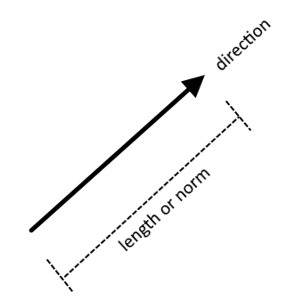

5. Mathematical Foundation of Quantum Computing#
by Bernard Ramos
5.1. Learning objective#
After succesfully completing this unit module, students should be able to understand and apply the working principles of linear algebra that are useful in quantum mechanics and quantum computing.
5.2. Prerequisite#
This module is designed for independent study and students should be comfortable working with familiar concepts in high school linear algebra such as vectors, matrices, and the three-dimensional coordinate systems.
{content}
5.3. Introduction#
Quantum computing is a field of computer science that harnesses the principles of quantum mechanics to solve computational problems.
Linear algebra is the mathematical framework of quantum mechanics—the study of the behavior of quantum states and their transformations.
Hence, it is imperative to understand linear algebra, or more generally of vector spaces, to be able to work with and reason about quantum systems in quantum computation.
Quantum mechanics is inherently a linear theory. It treats quantum states as vectors that live in a Hilbert vector space. The state of a quantum system can change to another state vector and this change is a linear transformation. The change in the quantum state brought about by the passage of time is also a linear transformation.
In this module, we present a quick review of the basic linear algebra needed to traverse the world of quantum computing and quantum theory. We will relearn vectors, vectors spaces, and linear transformations at a more general setting.
5.4. Vectors#
A vector is an ordered list of numbers. The numbers can be real numbers or complex numbers.
In elementary mechanics, we defined a vector as a quantity that has magnitude and direction.

Examples of physical quantities that can be represented as vectors are displacement, velocity, and force. These physical quantities are typically denoted by bold letters respectively
or by letters with arrows above them respectively
Recall that these vectors are actually list of ordered numbers. For instance, the position vector is written as \(\mathbf{r} = (x, y, z)\) where the real numbers \(x, y, z\) are respectively the coordinates along the \(x-\), \(y-\), and \(z-\)axes of the three-dimensional space.
In quantum mechanics and quantum computing, the state of a system is called a state vector and is denoted by angular brackets:
This particular notation for the state vector is called a ket in the Dirac’s bra-ket notation.
5.5. Vector spaces#
A vector space \(V\) is a set of vectors \(v\) which can be added together and scaled by numbers \(\alpha \in \mathbb{F}\) called scalars.
The set \(\mathbb{F}\) can be the set of the real numbers \(\mathbb{R}\) or the set of complex numbers \(\mathbb{C}\).
Let \(u, v, w, z \in V\) and \(\alpha \in \mathbb{F}\). The operations in \(V\) are
vector addition: \(w = u + v\)
scalar multiplication: \(z = \alpha u\)
which satisfy familiar associative, commutative, and distributive properties.
A vector \(v \in V\) can also be written as a linear combination of some vectors \(v_1, v_2, \cdots, v_n\) in the set \(V\) such that for some scalars \(\alpha_1, \alpha_2, \cdots, \alpha_n \in \mathbb{F}\),
Consider special subset \(B = \{ u_j \}_{j=1}^N = \{ u_1, u_2, \ldots, u_N \}\) of \(V\). If \(B\) is linearly independent and if any vector \(v\) in our vector space \(V\) can be written as a linear combination of vectors in \(B\), then \(B\) is a basis set.
The dimension of our vector space \(V\) is defined as \(N\), the number of elements in the basis set \(B = \{ u_j \}_{j=1}^N\), written \(\dim(V)\).
If our scalars in the vector space are real numbers belonging to \(\mathbb{R}\) and the basis has dimension \(N\), the vector space is labelled \(\mathbb{R}^N\). In words, we say that \(\mathbb{R}^N\) is a vector space over \(\mathbb{R}\).
Example 1. A basis for the three-dimensional space, also called the Euclidean space, and denoted \(\mathbb{R}^3\), is
because it is linearly independent and spans the space. That is, an arbitrary vector \(v\) in the vector space \(\mathbb{R}^3\) can be written as
for any real number \(a\), \(b\), and \(c\). ■
Example 2. If in the above example, the scalars \(a\), \(b\), and \(c\) are instead complex numbers in \(\mathbb{C}\), then the vector space is \(\mathbb{C}^3\). The space \(\mathbb{C}^3\) is called a complex vector space. ■
Example 3. A vector space in quantum mechanics is called a state vector space or simply a state space usually denoted by \(\mathcal{H}\) (the Hilbert space).
The members of this state space are the state vectors \(| u \rangle\) and the scalars are complex numbers \(\alpha \in \mathbb{C}\).
In a qubit state vector space, a basis is \(\{ | 0 \rangle, | 1 \rangle \}\). A valid state vector in this space \(\mathcal{H}\) is
■
5.6. Vector subspaces#
We will sometimes be interested in working with a subset \(V'\) of a vector space \(V\). If this subset \(V'\) has a basis \(B'\), then \(V'\) is a vector subspace of \(V\).
Example 4. An example is the \(xy\)-Cartesian plane which is a subset of the three-dimensional Euclidean space. It is spanned by the basis
We normally drop the third entry since it is always zero. Hence, any column vector in the \(xy\) plane takes the form
■
5.7. Inner products#
If \(\mathbb{F} = \mathbb{R}\), recall that we associate the dot product to the following form of matrix multiplication
To introduce the dot product in a vector space consisting of column vectors, we first define the transpose of a column matrix to maintain the above form of matrix multiplication. Transposing a column vector results in a row vector. Suppose \(u\) is such vector, then its transpose is denoted \(u^T\).
Example 5. Consider the two column vectors
The transpose of \(u\) is \(u^T = \begin{bmatrix}a & b\end{bmatrix}\) and so the dot product \(u^T v\) is given by
■
Question. Suppose \(u = \begin{bmatrix} a \\ b \end{bmatrix}\) is a vector in a vector space \(V\). Is \(u^T \in V\)? Or is \(u^T \not\in V\)?
Answer. The row vector \(u^T\) is not in \(V\). It lives in another vector space whose elements are row vectors that include \(u^T = \begin{bmatrix}a & b\end{bmatrix}\). This is the reason why we need to define transposition such that we can convert to a column vector to a row vector.
The inner product is a generalization of the familiar dot product of two vectors beyond the three-dimensional Euclidean space. It maps two vectors \(u\) and \(v\) to a real number.
If each entry \(u_i\), \(v_j\) in the column vector \(u\), \(v\) are complex numbers, we must take the Hermitian conjugate of \(u\) instead of simply transposing \(u\). The Hermitian conjugate of \(u\), which we denote as \(u^\dagger\), is the sequential application of transposition and complex conjugation on \(u\). Let \(u_i^*\) be the complex conjugate of \(u_i\), then the Hermitian conjugate of \(u\) is
The inner product is thus defined as
The symbol \(\dagger\) is the dagger indicating the application of Hermitian conjugation on a vector. The above general definition for the inner product guarantees that \(u^Tu\) and \(v^Tv\) are real numbers. This comes from the fact that each \(u_i^*u_i\) and \(v_j^*v_j\) are always real numbers so that
and
Furthermore, the inner product ensures that \(u^\dagger u\) and \(v^\dagger v\) are nonnegative. Hence, we recover the useful notion of length or norm of a vector which is given by
for some vector \(u\).
Example 6. Let \(u = \begin{bmatrix} 1-i \\ 2 \\ 3i \end{bmatrix}\). The complex conjugate \(u^*\) is
Transposing this column matrix, \((u^*)^T\), we get the Hermitian conjugate \(u^\dagger\) of \(u\)
■
Example 7. Consider the column vector \(u\) above. The inner product \(u^\dagger u\) is
The norm of \(u\) is
■
Example 8. Let \(u = \begin{bmatrix} 1-i \\ 2 \\ 3i \end{bmatrix}\) and \(v = \begin{bmatrix} 1 \\ 0\\ 1 \end{bmatrix}\). Show that the inner product \(v^\dagger u\) is \(1 + 2i\). ■
In quantum mechanics and quantum computing, the state space \(\mathcal{H}\) is a complex vector space, that is, the scalars of the vector space are complex numbers.
The inner product is defined by
A vector space endowed with an inner product is called an inner product space.
If \(\langle u | v \rangle = 0\), then \(| u \rangle\) and \( | v \rangle\) are orthogonal to each other.
5.8. Tensor products#
Another vector multiplication that is defined for any pair of column matrices is the tensor product. Consider two vectors \(u_1 \in V_1\) and \(u_2 \in V_2\)
The tensor product \(u_1 \otimes u_2 \in V_1 \otimes V_2\) is given by
Notice that tensor product produces a vector with larger dimension. In the above example, the dimension of \(V_1\) is \(\dim(V_1)=2\) while \(\dim(V_2)=2\) so that the dimension of the resulting tensor product space \(V_1 \otimes V_2\) is
Tensor products are used to build new vector spaces from smaller vector spaces. Tensor product spaces are employed in the description of composite quantum states in quantum computing.
Example 9. In qubit quantum computing, the basis vectors \(| 0 \rangle, | 1 \rangle \in \mathcal{H}\) acquires the column matrix representation
A basis for \(\mathcal{H} \otimes \mathcal{H}\) is
Show that this is equivalent to \(\{ | 0 \rangle \otimes | 0 \rangle, | 0 \rangle \otimes | 1 \rangle, | 1 \rangle \otimes | 0 \rangle, | 1 \rangle \otimes | 1 \rangle \}\).
Hint. The tensor product \(| 0 \rangle \otimes | 0 \rangle\) is solved as follows.
5.9. Linear transformations#
A linear transformation between two vector spaces \(V\) and \(W\) is a map \(T : V \to W\) such that the following hold
Matrix multiplication is a linear transformation.
Let \(A\) be an \(n \times m\) matrix. The linear transformation in matrix language is given by
for some \(m \times 1\) column vector \(v\).
Matrices are sometimes referred to as linear operators because they act to transform a column vector to another vector.
Consider the \(2 \times 2\) matrix
Given a \(2 \times 1\) column vector \(\begin{bmatrix} y \\ z \end{bmatrix} \in \mathbb{F}^2\), the plane transformation \(T : \mathbb{F}^2 \to \mathbb{F}^2\) is given by
Example 10. Let \( u = \begin{bmatrix} 2 \\ 8 \end{bmatrix} \in \mathbb{R}^2\) and consider the linear operation by \(M = \begin{bmatrix} 1 & -1\\ 0 & \phantom{-}1 \end{bmatrix}\). Show that
■
We can also take the composition of two linear transformations. Suppose we have the transformations \(T : V \to W\) and \(S : W \to X\). Then the transformation \(U : V \to X\) is a linear transformation where \(U\) is the composite operator \(U = S \circ T\). That is
In the case of matrices, \(S \circ T\) is simply the matrix multiplication \(S T\).
Example 11. Suppose the matrix representation of \(T\) is \(\begin{bmatrix} 1 & -1\\ 0 & \phantom{-}1 \end{bmatrix}\) and of \(S\) is \(\begin{bmatrix} 1 & 4\\ 9 & 7 \end{bmatrix}\). Then, the composite \(S \circ T = ST\) is given by
Is \(ST = TS\)? If this is true then we say the matrix for \(S\) commutes with that of \(T\). ■
For matrices, the composition is only defined if the number of columns in the matrix representation of \(S\) is equal to the number of rows in the matrix of \(T\). That is, the matrix operator for \(S \circ T\) is well-defined if \(T : \mathbb{F}^n \to \mathbb{F}^m\) and \(S : \mathbb{F}^m \to \mathbb{F}^l\) where \(m, n, l\) are positive integers and \(\mathbb{F}\) is the set of real numbers or the set of complex numbers.
The above implies that the order of matrix implication is important.
Example 12. Consider the following matrices
Which of the following matrix multiplications is well-defined?
■
Perhaps the most familiar linear transformation is the eigenvalue-eigenvector equation. The equation takes the form
where \(T\) is an \(n \times m\) matrix, \(x\) is an \(m \times 1\) column matrix, and \(\lambda\) is scalar. The column matrix \(x\) is called the eigenvector and the scalar \(\lambda\) is called the eigenvalue.
In an eigenvalue equation, the matrix \(T\) acting on an eigenvector simply produces the same eigenvector albeit scaled by a factor of \(\lambda\).
Example 13. Consider the Hadamard gate \(H\)
One of its eigevectors is \(v = \frac{1}{\sqrt{2}} \begin{bmatrix} 1 \\ 1 \end{bmatrix}\). The eigenvalue associated with this eigenvector is 1 since
■
5.10. Some special types of square matrices#
In quantum computing, we usually encounter \(2 \times 2\) matrices or the tensor product of \(2 \times 2\) matrices. They are useful in representing single qubit quantum gates.
The most common types of \(2 \times 2\) matrices we need in later chapters of this book are as follows.
Let \(a_{ij}\) be entry at row \(i\) and column \(j\) of an \(n \times n\) matrix \(A\). This matrix \(A = [a_{ij}]\) is called a square matrix.
\(A\) is an identity matrix, denoted by \(I\), if it is square and \(a_{ij} = 1\) if and only if \(i =j\). Otherwise, \(a_{ij} = 0\). Example: \(\begin{bmatrix} 1 & 0 \\ 0 & 1 \end{bmatrix}\)
The inverse of a matrix \(A\) is \(A^{-1}\) such that \(A A^{-1} = A^{-1} A = I\)
\(A\) is Hermitian if and only if \(A^\dagger = A\). Example: \(A = \begin{bmatrix} 1 & 1+i \\ 1 - i & 2 \end{bmatrix}\)
\(A\) is orthogonal if and only if \(AA^T = A^T A = I\). Example: \(A = \begin{bmatrix} -1 & 0 \\ \phantom{-}0 & 1 \end{bmatrix}\)
\(A\) is unitary if and only if \(AA^\dagger = A^\dagger A = I\). Example: \(A = \begin{bmatrix} -i & 0 \\ \phantom{-}0 & 1 \end{bmatrix}\)
Example 14. Let us show that the inverse of \(I = \begin{bmatrix} 1 & 0 \\ 0 & 1 \end{bmatrix}\) is itself \(I\). Similarly, the inverse of \(M = \begin{bmatrix} 0 & 3 \\ 1 & 2 \end{bmatrix}\) is \(M^{-1} = \begin{bmatrix} -2/3 & 1 \\ 1/3 & 0 \end{bmatrix}\).
We will follow the definition of an inverse of a matrix. If \(I^{-1} = I\), then
hence \(I\) is the inverse of \(I\). For the second case, we also need to show that \(M M^{-1} = M^{-1} M = I\)
From our high school linear algebra we know that the inverse of a matrix exists if its determinant is nonzero. Recall that the determinant of a \( 2 \times 2\) matrix \(M\) is \(\det(M)\) given by
■
Example 15. Show that \(I = \begin{bmatrix} 1 & 0 \\ 0 & 1 \end{bmatrix}\) is Hermitian, orthogonal, and unitary. ■
5.11. Matrix diagonalization#
A square matrix \(D\) is diagonal if all its entries are zero except those in the principal diagonal. The process of converting a square matrix \(A\) into a diagonal matrix \(D\) is called matrix diagonalization.
The entries in the diagonal matrix \(D\) turns out to be the eigenvalues of the original matrix \(A\).
The relationship between the matrix \(A\), the diagonal matrix \(D\), and the eigenvalues and eigenvectors of \(A\) is summarized in the identity
where \(P\) is some square matrix that has an inverse \(P^{-1}\). The entries in the diagonal of \(D\) are, as mentioned already, the eigenvalues of \(A\). The corresponding eigenvector for each eigenvalue of \(A\) appear as columns of \(P\). If the above identity exists between two matrices, we say that \(A\) is similar to \(D\) and vice versa.
Not all matrices are diagonalizable. Matrices that have distinct eigenvalues are diagonalizable. Orthogonal, Hermitian, and unitary matrices are also diagonalizable. Hermitian matrices always have real eigenvalues.
Hamiltonian operators in quantum mechanics can be represented as Hermitian matrices. The time evolution of state vectors can be described by an action of a unitary matrix on a chosen state vector.
The matrix diagonalization process starts with finding the eigenvalues and eigenvectors. Once these are determined and the eigenvectors are found to be mutually orthogonal, then we can construct the diagonal matrix \(D\) and the matrix \(P\).
Example 14. Let us diagonalize the Hermitian matrix \(A = \begin{bmatrix} 1 & 1+i \\ 1 - i & 2 \end{bmatrix}\).
From our basic linear algebra, we start looking for the eigenvalues \(\lambda\) by solving the following determinant
For each eigenvalue \(\lambda\), we solve for the corresponding eigenvector. Performing the required procedure we learned from our high school algebra, we find that \(\begin{bmatrix} -1 -i \\ 1 \end{bmatrix}\) is the eigenvector for \(\lambda = 0\) while it is \(\begin{bmatrix} \frac{1+i}{2} \\ 1 \end{bmatrix}\) for \(\lambda = 3\).
Our diagonal \(D\) is thus
and the matrix \(P\) is
It can be shown that these matrices satisfy the similarity relationship \(A = P D P^{-1}\).
■
5.12. Exercises#
Exercise 1. Consider the vector space \(\mathbb{R}^2\). Let its basis be
If \(a, b\) are real numbers, does the vector \(w\) defined by
belong to the vector space \(\mathbb{R}^2\)? What if \(a, b\) are complex numbers?
Exercise 2. Suppose we are given a basis
for some vector space \(V\). Let \(a, b\) be real numbers. Does the vector
live in the vector space \(\mathbb{R}^2\) or \(\mathbb{C}^2\)?
Exercise 3. Consider the set
Are the vectors in \(B\) orthogonal to each other? What is the inner product of the two vectors? What about the norm?
Exercise 4. Let \(u, v \in \mathbb{R}^2\) given by
Find the inner product \(u^T v\) and the tensor product \(u \otimes v\). Is \(u \otimes v = v \otimes u\)?
Exercise 5. Consider the matrices given in Example 12
Find \(MM\) and \(PN\).